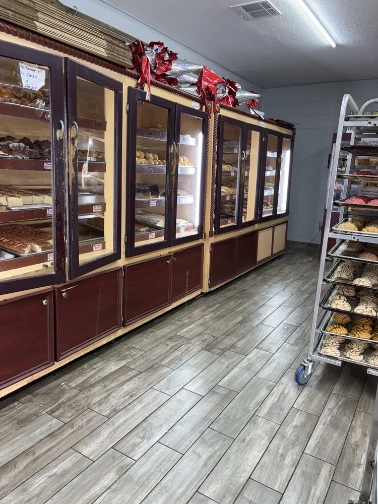
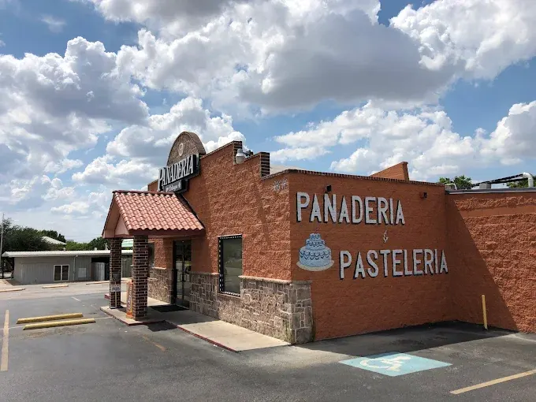
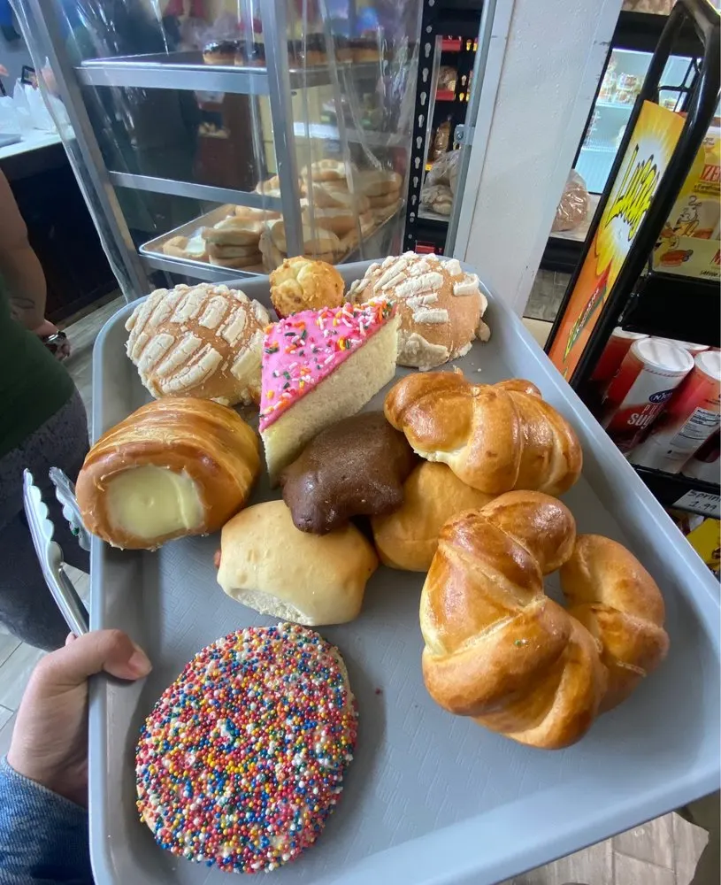

A lo largo de casi 18 años, Panadería Celaya ha sido un punto de encuentro para familias de Grand Prairie, Arlington, Dallas y todo el Metroplex de DFW. Lo que comenzó como un sueño de compartir el auténtico sabor del pan dulce mexicano se ha convertido en una casa para todos.
Desde el primer día, nuestra misión ha sido la misma: ofrecerles la más alta calidad sin atajos. Horneamos esas ricas conchas que tanto les encantan, el crujiente y noble bolillo para la mesa de cada día, empanadas con relleno de calabaza de verdad y buñuelos como los que hacía la abuela.
Cada pieza, desde la más sencilla hasta el pastel más elaborado, lleva consigo el cariño de un equipo que amasa, hornea y decora con una pasión inagotable antes de que salga el sol.
“Dieciocho años se dicen fácil, pero están llenos de madrugadas, de hornos calientes y, sobre todo, de mucho corazón. La verdadera razón de que estemos aquí, firmes y felices, son ustedes, nuestros clientes. Gracias por su fidelidad y por permitirnos ser parte de sus mesas.”
— La Familia Celaya

Rincones de Nuestra Panadería



